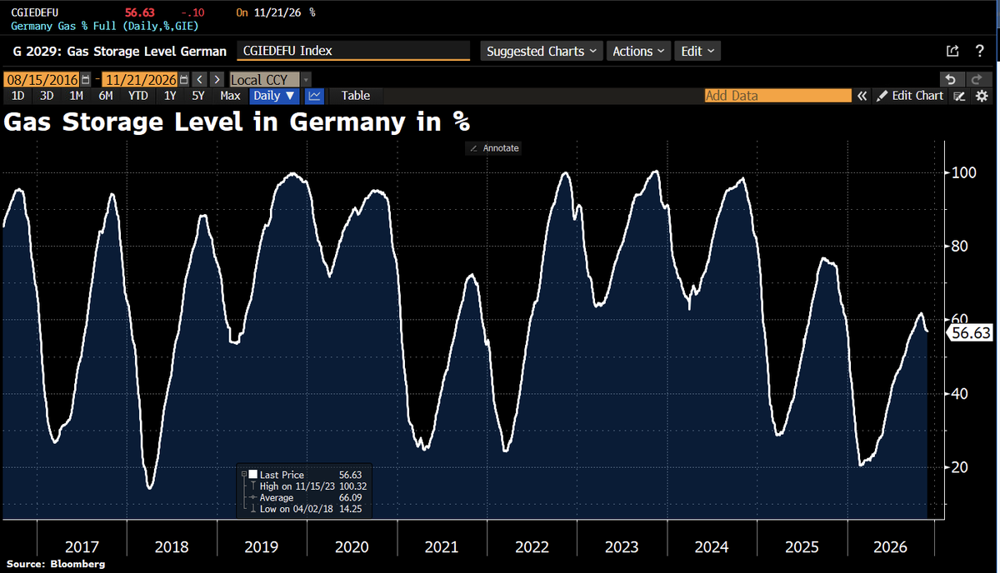
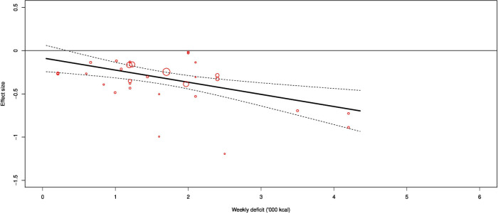

🗞️ Zero virgola settanta
OpenAI mostra la curva della perplexity e propone limiti comuni, Trump rivuole Huang alla guida di Nvidia, Wall Street rimbalza dopo una delle correzioni più rapide dal 1928 e la Germania entra in inverno con i depositi di gas al 56,6%
Brief di lunedì 23 novembre 2026 · lista X «Best» · 92 post da 31 account, dalle 16:09 del 22/11 alle 13:21 del 23/11 (ora di Roma)
📏 Per anni l'intelligenza artificiale si è misurata in benchmark, classifiche e vibrazioni. Domenica OpenAI ha messo sul tavolo un righello solo: la log-perplexity dei suoi modelli base, una linea che scende da GPT-3.5 fino a un «modello interno» sotto la soglia del problema del Millennio. Sotto, una fascia azzurra con un punto di domanda. Nelle stesse ore la politica americana provava a riscrivere il vertice di Nvidia, i mercati cercavano il fondo e l'Europa guardava il termometro.
🤖 AI · Sicurezza📏 Il righello della perplexity
Jakub Pachocki, chief scientist di OpenAI, ha pubblicato «Perplexity and Intelligence»: più trasparenza sui progressi del pre-training per arrivare a soglie di sicurezza condivise. Ogni gradino della curva ha un'etichetta: conversazione fluente, «utile programmatore», «esperto di cybersicurezza», «ha risolto un problema del Millennio». Sam Altman la chiama la cosa più importante pubblicata da OpenAI da tempo e cita la proposta centrale: limiti comuni, basati sulla perplexity e su altre misure, che i laboratori si impegnano a non superare finché la capacità di capire e monitorare i modelli non raggiunge una tappa concreta, per esempio un successore dei monitor sulla chain of thought. Greg Brockman sottolinea la frase che pesa di più: l'AI aiuterà l'allineamento, ma difficilmente abbastanza in fretta da reggere il ritmo del pre-training. C'è chi, come cryptopunk7213, ci legge una richiesta di pausa a 0,70, proprio sotto il modello interno.

x.com/sama/status/2124551594691932405
Il post più condiviso della giornata però è di Alexandr Wang, che da Meta firma «Superintelligence is Arriving» (oltre 36 mila like). La tesi: con la dimostrazione dell'ipotesi di Riemann l'intelligenza grezza ha smesso di essere il collo di bottiglia, ciò che manca ai modelli per superare gli umani in ogni campo è know-how di dominio, «idraulica» e sperimentazione, e la ricerca sull'AI, molto meno difficile di Riemann, sarà automatizzata per prima. Da qui l'attacco alla «lazy thinking» del settore, quella che considera l'ASI inevitabile: niente «handover» della società all'AI. In un secondo post Wang precisa che la strada non è obbligata e rivendica il lancio di Muse rimandato di mesi e gli SI Accords firmati da tutti i laboratori. Ne avevamo parlato, con meno numeri e più stupore, in 😮 ff.158.3 Stupore spaventoso?; la domanda di fondo è quella di 🐒 ff.36.1 Esempi di superintelligenza?.
✍️ AI · Scrittura🖋️ Bravi in matematica, rimandati in prosa
Ethan Mollick si irrita con chi liquida tutto con «certo, gli LLM sono bravi in matematica»: «bravi» è un eufemismo se parliamo di Riemann, e fino a poco tempo fa non lo erano affatto. Aggiunge che i guadagni arrivano anche dove non c'è verifica automatica, con valutazioni umane su scrittura, problemi di business e design. Azeem Azhar non è d'accordo, almeno per la prosa: per lui Fable e Opus non scrivono meglio di GPT-4, ragionano e strutturano meglio, ma le frasi vanno ancora domate a mano, anzi sono più insidiose perché sembrano già rifinite. Lucas Beyer guarda proprio il grafico di OpenAI e rimpiange GPT-4.5: nessun modello delle serie 5 e 6 gli si avvicina in creatività linguistica, forse perché il post-training su scienza e codice «frigge» la vena creativa. Il copione di ❌ ff.158.4 Si sbagliano tutti, con un dettaglio in più: i pronostici sbagliano in entrambe le direzioni.
💚 Nvidia · Politica🔄 Jensen è «fuori», quindi può rientrare
Dieci giorni fa Trump proponeva Tim Cook al posto di Jensen Huang. Domenica ha chiesto esplicitamente al board di Nvidia di riassumerlo: «la cosa migliore per l'azienda e per gli USA». Scott Bessent, che una settimana fa voleva un CEO «da fuori», ha cambiato registro: «Jensen adesso è fuori». I mercati di previsione hanno fatto il resto, Huang dal 10% al 19% e secondo favorito; Igor Babuschkin scrive che riportarlo sarebbe giusto per l'economia, il paese e l'accesso aperto ai modelli. Poche ore dopo Rene Haas, considerato il candidato forte alla successione, diventa vicepresidente di SoftBank dal 1° dicembre e ribadisce il suo impegno «di lungo periodo» in Arm. Nvidia +8% nella giornata. L'azienda che valeva più della Svizzera (🍫 ff.139.1 Svizzero? No, NVIDIA) è diventata una questione di Stato.
📉 Mercati🎢 Trentatré sedute
I numeri della settimana nera: S&P 500 −11,6% dal picco del 6 ottobre in 33 sedute, tra le 15 correzioni più rapide dal 1928, con il 94% dei titoli in calo; VIX a 35,9, quinto rialzo settimanale di sempre; l'ETF a leva sui semiconduttori SOXL −90% dal picco di giugno. Nemmeno i beni rifugio hanno retto: oro −21,6% da inizio settembre, il peggior trimestre mobile dal 1981, argento −38,7%. Il Treasury decennale è al 5,10%, 27 sedute sopra il 5% nel 2026, e il prezzo mediano delle case americane scende per la prima volta da maggio 2023. Poi lunedì mattina i future sul Nasdaq 100 salgono di quasi il 4%, e Anthony Pompliano assicura che gli orsi dell'AI sembreranno ridicoli col senno di poi. Intanto le richieste di nuove imprese negli USA restano sopra quota 500 mila per il settimo mese di fila. Bolla o correzione? Rileggere 🧩 ff.88.1 Una bolla finanziaria? e, per i metalli, 🪙 ff.50.2 Oro, argento, mirra, birra e Bitcoin.
🔥 Energia🥶 Un lungo inverno
Dalla Germania Holger Zschaepitz manda il buongiorno con un grafico: stoccaggi di gas al 56,6% contro una media di circa l'88% per questo periodo (2020-25), il livello stagionale più basso almeno dal 2020. I future europei sono saliti fino all'8,6%, a 96 €/MWh, e a inizio dicembre il Nord-Ovest europeo potrebbe avere 5-8 °C sotto la norma. Dall'altra parte dell'oceano Peter Diamandis ricorda che nel 2024 il 91% delle nuove rinnovabili su scala utility produceva energia a costo inferiore della migliore alternativa fossile (dati IRENA), e pone la domanda che conta: quando si vedrà in bolletta? È la libertà di cui parlavamo in 🗽 ff.149.5 Libertà (da gas e petrolio).

🏃 Salute🛌 La dose che conta
Due promemoria per chi corre. Una meta-analisi di 40 studi randomizzati (PMID 36669870), rilanciata da Siim Land, mostra che con l'esercizio il grasso viscerale cala in proporzione alle calorie spese, fino a circa 4.000 kcal a settimana, mentre la sola restrizione calorica non ha una relazione dose-risposta chiara. E Diamandis chiama il sonno «il farmaco per la longevità più economico del mondo»: il 30,5% degli adulti americani dorme meno di 7 ore. David Sinclair segnala invece che per ogni anno in più dell'orologio epigenetico Grim2AA il rischio di eventi cardiovascolari sale del 6-11%.

📚 Coda🐶 Verità scomode e cuccioli
Per il fine anno Marginal Revolution ha pubblicato i migliori libri di non-fiction del 2026, e Brad Feld racconta di aver letto solo ora Home Game di Michael Lewis: ha riso molto, poi ha scoperto che la figlia Dixie è morta a 19 anni e il libro è diventato tutt'altro. Paul Graham, tra un cucciolo nuovo e l'altro, lascia la frase da appendere:
x.com/paulg/status/2124834732303327654
🎼 Spunti per ff
- 📏 Un numero per fermarli tutti. OpenAI propone di misurare l'intelligenza con la perplexity e di fissare un limite comune che nessuno supera finché non sappiamo monitorare i modelli. Può un numero diventare un trattato? E chi controlla il righello? Fonti: Pachocki, Altman, Brockman, Wang, 😮 ff.158.3 Stupore spaventoso?.
- 🖋️ Il genio che scrive male. Risolvono Riemann ma la prosa resta da riscrivere a mano, e GPT-4.5 era più creativo dei successori. Il post-training su codice e matematica ha un costo per le parole? Fonti: Azhar, Beyer, Mollick, ❌ ff.158.4 Si sbagliano tutti.
- 🥶 Winter is coming (di nuovo). Stoccaggi tedeschi al 56,6% contro l'88% medio, gas a 96 €/MWh e rinnovabili che costano meno del fossile nel 91% dei nuovi impianti. Perché la bolletta non se ne accorge? Fonti: Zschaepitz, Diamandis/IRENA, 🗽 ff.149.5 Libertà (da gas e petrolio).
🎧 Da ascoltare
- Nelle ultime 24 ore la lista non ha segnalato podcast né talk. In alternativa, da leggere:
- «Superintelligence is Arriving» di Alexandr Wang: il testo lungo della giornata, da Riemann alla critica dell'ASI «inevitabile».
- I migliori libri di non-fiction del 2026 secondo Marginal Revolution.
- Brad Feld su «Home Game» di Michael Lewis: un libro sull'essere padri, che col tempo è diventato un'altra storia.